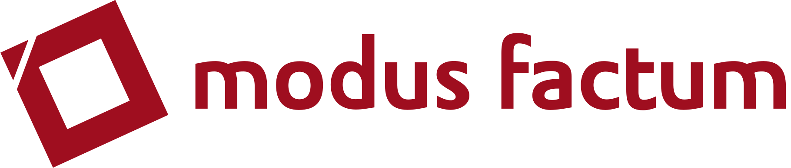

Die modus factum GmbH ist ein in Hamburg, Berlin, Wien, Istanbul und Ankara ansässiges Forschungs- und Beratungsunternehmen. Die Partner sind Persönlichkeiten, die bereits seit den 90er Jahren in den Forschung, Marketing, Kommunikation, Business Development und internationale Handelsbeziehung tätig sind.
modus factum betreut lokale und internationale Kunden und bietet praxisorientierte Beratung mit dem Fokus auf Markterschließung und Steigerung von Absatzmöglichkeiten. Die Arbeitsstrategie von modus factum ist es, Kunden dabei zu unterstützen, den Markt zu verstehen, Marktausbau-, Markteintritts- und Markteinführungsstrategien zu entwickeln und umzusetzen.
modus factum bietet seine Dienstleistungen für Kunden auf der ganzen Welt an, bei denen es um strategische Investoren oder Exporteure handelt. Unsere Reputation basiert auf der Zufriedenheit und den Empfehlungen unserer Kunden, die wir mit unserer exzellenten Expertise bei ihren Projekten erfolgreich in verschiedenen Marktsegmenten begleitet haben.
Die Forschungs- und Beratungsdienste helfen Unternehmen bei der Bewertung der Märkte, potenzieller Zielunternehmen und Konkurrenten. Die individuelle Analyse der Chancen und Risiken bieten eine solide Grundlage für fundierte Investitions- oder Handelsentscheidungen.
Jedes Projekt ist ein neues Baby für die modus factum Familie und wird auf die Bedürfnisse sowie Ziele der Kunden zugeschnitten und mit hoher Einsatzbereitschaft umgesetzt.